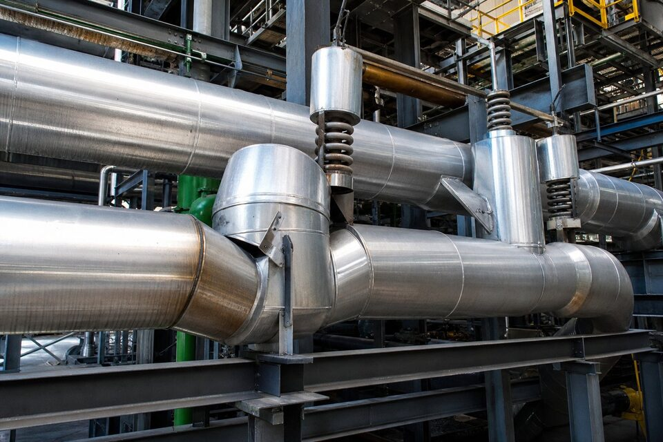

محدوده کاربرد: پایپینگ قدرت چیست؟
استاندارد (ASME B31.1) یکی از قدیمیترین و معتبرترین کدهای پایپینگ جهان است و حوزه آن، سیستمهای لولهکشی قدرت را پوشش میدهد: خطوط بخار اصلی و کمکی، آب تغذیه دیگ، سیستمهای تخلیه و سایر سیالات در نیروگاهها و تاسیسات تولید بخار صنعتی. مرز این کد معمولا از اولین اتصال خروجی دیگ بخار شروع میشود و تا مصرفکنندههای بخار ادامه مییابد. وجه تمایز پایپینگ قدرت، سطوح بالای دما و فشار همراه با بارهای دینامیکی مانند ضربه قوچ و انبساط حرارتی است؛ به همین دلیل کد، الزامات ویژهای برای تحلیل انعطافپذیری، ساپورتگذاری و جنس مواد در دمای بالا دارد. برای خریدار، شناخت این محدوده مهم است، چون پایپینگ نیروگاهی نباید با کدهای فرایندی یا ساختمانی جایگزین شود.

الزامات طراحی و متریال
در بخش طراحی، کد روشهای محاسبه ضخامت دیواره بر اساس فشار و دمای طراحی را ارائه میدهد و جداول متریال مجاز، تنشهای قابل قبول هر آلیاژ را در دماهای مختلف مشخص میکند. برای خطوط بخار با دمای بالا، آلیاژهای کمآلیاژ و در موارد خاص آلیاژهای پرآلیاژ به کار میروند و پدیده خزش، عامل اصلی تعیین عمر طراحی است. تحلیل انعطافپذیری نیز برای اطمینان از تحمل انبساطهای حرارتی بدون بارگذاری مفرط روی تجهیزات الزامی است. در سمت اجزای پایپینگ، لولهها، اتصالات و فلنجها باید مطابق استانداردهای مرجع شده در کد ساخته شوند و ترکیب متریال اتصال جوشی با لوله، سازگار باشد. انتخاب یک کلاس پایپینگ نیروگاهی در واقع همین مجموعه تصمیمها را به صورت از پیش تعیینشده در اختیار مهندسی میگذارد.
جوشکاری و آزمون
- صلاحیت جوشکار و فرایند: مطابق الزامات کد و با سوابق معتبر.
- پیشگرم و عملیات حرارتی پس از جوش: برای آلیاژهای مستعد سخت شدن.
- آزمونهای غیرمخرب: رادیوگرافی یا فراصوتی متناسب کلاس سرویس و قطر.
- تست هیدرواستاتیک: با فشار تعیینشده کد پس از تکمیل نصب.
- مدارک کامل: نقشهها، گزارش جوشها، گواهی متریال و نتایج آزمونها.
در پایپینگ قدرت، کیفیت جوشها مستقیما با ایمنی پیوند دارد: خرابی یک خط بخار پرفشار میتواند فاجعهبار باشد. به همین دلیل درصد بالایی از جوشها در خطوط پرفشار با رادیوگرافی کامل بررسی میشوند و هر جوش باید ردیابیپذیر باشد. بازرسی در حین ساخت و نصب نیز نقش کلیدی دارد؛ کنترل پیشگرم، دمای بین پاسی و شرایط محیطی جوشکاری از مواردی است که بازرسان بر آن نظارت میکنند. در پروژههای نیروگاهی، این مدارک در فایل کیفیت هر خط بایگانی و در بازرسیهای دورهای بهرهبرداری استفاده میشوند.
تفاوتهای کلیدی با (B31.3)
بسیاری از مهندسان و خریداران با هر دو کد (B31.1) و (B31.3) سر و کار دارند و تمایز آنها در عمل مهم است. (B31.1) بر پایپینگ قدرت با تمرکز بر دماهای بالا و بارهای دینامیکی نیروگاهی تدوین شده و ضرایب و روشهای خاص خود را دارد، در حالی که (B31.3) برای تنوع گسترده سیالات فرایندی در پالایشگاه و پتروشیمی طراحی شده و انعطاف بیشتری در انتخاب متریال و آزمونها دارد. جداول تنش مجاز، الزامات آزمون غیرمخرب و حتی تعریف نقاط مرزی در دو کد متفاوت است؛ بنابراین ارجاع کد درست در اسناد پروژه الزامی است. در پروژههایی که هر دو نوع پایپینگ وجود دارد، مانند نیروگاههای صنعتی بزرگ، مشخصات فنی باید به صراحت کد حاکم هر خط را اعلام کند تا در خرید، متریال و آزمونها اشتباه انتخاب نشوند.
نکات خرید پایپینگ منطبق با کد
برای خرید اقلام پایپینگ قدرت، مشخصه متریال مانند گرید لوله، نوع اتصال و کلاس فشار را همراه با کد و نسخه سال آن در استعلام ذکر کنید. گواهی متریال باید در سطح ۳.۱ یا بالاتر مطابق (EN 10204) درخواست شود و ردیابی مشخصه ذوب تا قطعه نهایی حفظ گردد. در اتصالات و شیرآلات نیز تایید انطباق با کد و سوابق ساخت مشابه اهمیت دارد؛ تامینکنندهای که نتواند مدارک متریال کامل ارائه دهد، عمولا خارج از رقابت است. بازرسی شخص ثالث برای سفارشهای بزرگ و کنترل بستهبندی و حمل اقلام با پوششهای خاص نیز باید در قرارداد دیده شوند تا کالا در شرایط قابل نصب به سایت برسد.
جمعبندی
استاندارد (ASME B31.1) مرجع طراحی، ساخت و آزمون پایپینگ قدرت است و رعایت آن پیششرط ایمنی در خطوط بخار و آب تغذیه نیروگاههاست. با شناخت محدوده کد، دقت در الزامات متریال و جوشکاری و خرید مبتنی بر مدارک کامل، میتوان پایپینگی مطمئن و منطبق با الزامات بهرهبرداری نیروگاهی تحویل گرفت.
سوالات رایج
محدوده کاربرد (ASME B31.1) چیست؟
پایپینگ قدرت شامل خطوط بخار، آب تغذیه و سایر سیالات در نیروگاهها و تاسیسات تولید بخار، از خروجی بویلر تا مصرفکننده، با سطوح دما و فشار نیروگاهی.
تفاوت اصلی آن با (ASME B31.3) چیست؟
(B31.1) برای پایپینگ قدرت و نیروگاهی تدوین شده با تمرکز بر بارهای دینامیکی و دماهای بالا؛ (B31.3) برای پایپینگ فرایندی پالایشگاه و پتروشیمی است و الزامات متفاوتی دارد.
در استعلام پایپینگ نیروگاهی چه چیزی الزامی است؟
ذکر کد حاکم یعنی (B31.1) با نسخه سال، کلاس پایپینگ، مشخصه متریال و الزامات آزمون و بازرسی؛ بدون این اطلاعات پیشنهاد فنی معتبر نیست.
الزامات آزمون در این کد شامل چه مواردی است؟
آزمونهای غیرمخرب متناسب کلاس سرویس، تست هیدرواستاتیک با فشار تعیینشده کد و مدارک کامل شامل گزارش جوشکاری و گواهیهای متریال.
مطالب مرتبط
تامین لوله، اتصالات و شیرآلات پایپینگ قدرت مطابق (ASME B31.1) با مدارک متریال کامل.
مشاهده صفحه محصول ← ثبت RFQ همین محصولتامین این تجهیزات را به پیشرو تجهیز فرتاک بسپارید
شرکت پیشرو تجهیز فرتاک تامینکننده تخصصی تجهیزات صنعتی برای پروژههای نفت، گاز، پتروشیمی، فولاد و نیروگاهی است. برای دریافت پیشنهاد فنی و قیمت، استعلام (RFQ) خود را ثبت کنید تا کارشناسان مهندسی فروش در کوتاهترین زمان پاسخ دهند.
- تامین تجهیزات صنایع نفت و گازپکیج مواد مطابق وندورلیست
- تامین برق صنعتیتجهیزات تابلو و حفاظتی